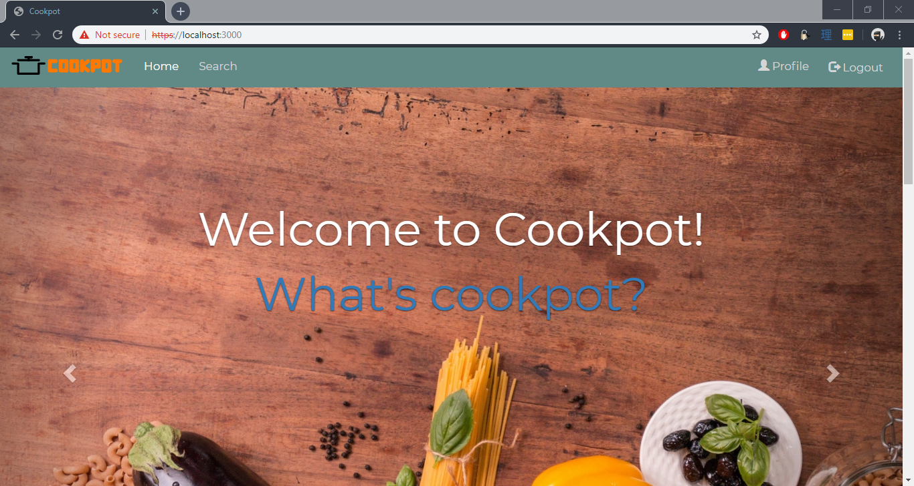
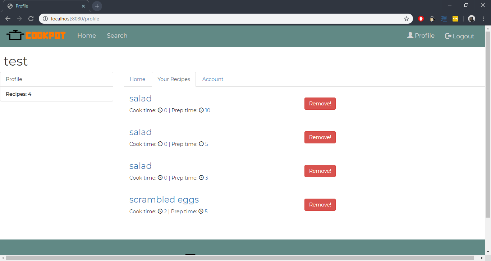
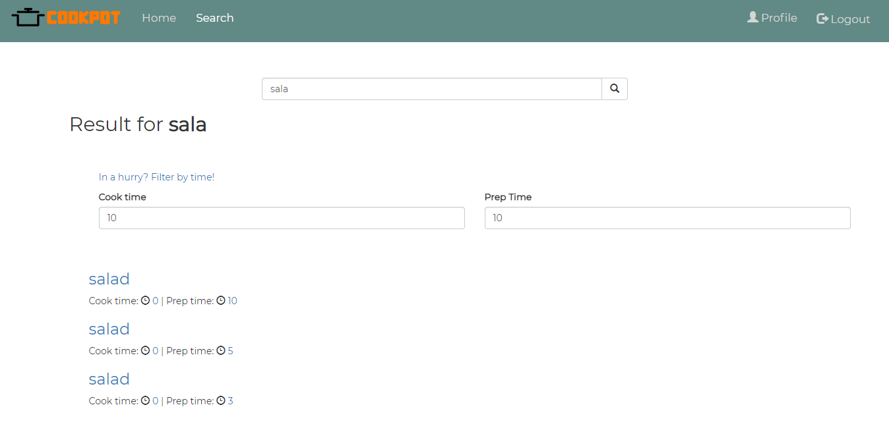

Web Tech Report: FINAL
Team
-
Joseph Mills - jm16577
-
Freddie Jones - fj16315
Topic
Our website is designed to allow students to upload, share and view recipes.
Report
-
HTML
-
We serve web pages as XHTML
-
We have written a variety of HTML pages.
-
Tried our website out in a number of different screen resolutions to ensure it would work on all devices.
-
CSS
-
We used bootstrap as a css framework but also wrote our own css to make the behave how we wanted to.
-
There is no inline CSS and the javascript is seperated as much as possible
-
JS
-
We have written several scripts for interaction with the page HTML as well as interaction with the server.
-
Loading search results (both on search page and user page).
-
Adding/ removing elements (variable length ingredients/method in adding recipe).
-
Switching elements based on whether you are signed in (login/logout and signup/profile).
-
Bluring images on hover (homepage carousel links).
-
Smooth scrolling between elements. (Clicking on the footer smooth scrolls to top).
-
Sending a user/ recipe to be added to the backend (adding recipe/signup).
-
Form validation (adding recipe).
-
PNG
-
We edited existing PNG images (e.g. resizing and bluring) using paint.net, these can be seen on the homepage. These blurred image however not used as this was done with CSS instead.
-
Created our own PNG's using paint.net. e.g. The cooking pot loading animation was made this way (when loading in the search page).
-
SVG
-
We have created our own SVG logo and icons using inkscape, using layers path editing and grouping as can be seen in the logo.
-
Server
-
We wrote our own server using Express
-
The server proforms URL validation using valid-url
-
We used passport, crypro and express sessions to manage login and session cookies.
-
We have used prepared statements to prevent SQL-injection attacks.
-
Our website is self certified such that the server runs http on port:8080 and https on port:3000.
-
database
-
We used SQLite for database management.
-
It is possible and remove recipes and accounts.
-
Ensured no duplications of data inside the database.
-
Dynamic Pages
-
We used pug as an express vue engine for HTML templating to display the individual recipe pages.
-
We used javascript and jQuery in order to manipulate page content and provide dynamic web pages e.g. loading search results.
Screenshots
-
SVG Logo
-
Cooking pot png animation
-
Screenshot of homepage

-
Screenshot of the profile page

-
Screenshot of the search page

Resources